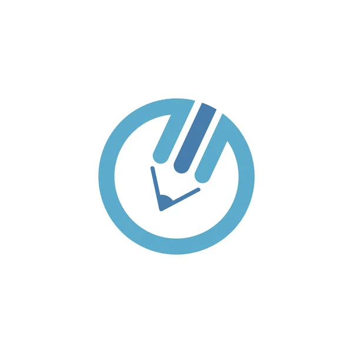
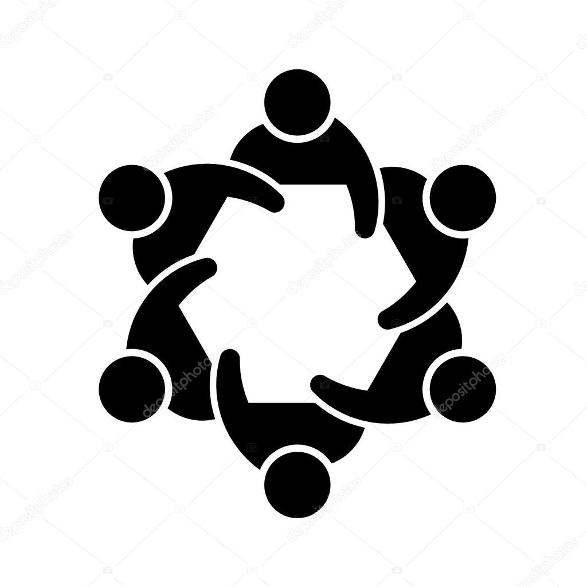

+ de 60 professionnels accompagnés
afin de les aider à renforcer leur expertise
+ de 1 000 heures
de formation dispensées
+ de 135 heures de parcours de formation
en co-création avec les meilleurs experts
Vous allez adorer nos formations-actions si :

Pour vous formation rime avec action...
…et qu’à l’issue de votre formation vous souhaitez
mettre en œuvre ce que vous avez appris !

Vous croyez à la force de l’intelligence collective...
…pour résoudre les problèmes plus efficacement et
dégager des consensus !
Vous souhaitez vous appuyer sur des méthodes efficaces...
…co-construites par les meilleurs experts du
marketing.
Toutes nos méthodes et formations s'appuient sur les 4 phases du
double-diamant !
Explorer les problématiques (divergence) : à travers un
canvas spécifique à chacune des méthodes vous vous
posez les bonnes questions pour vous immerger dans le
problème et cerner les enjeux.
1
Formaliser et définir le problème (convergence) : à
l’issue de cette première phase vous dégagez
collectivement un consensus sur l’énoncé du problème à
résoudre.
2
Chercher des solutions au problème (divergence) : à
travers les outils propres à chacune des méthodes et des
apports théoriques vous faites émerger des idées et des
pistes de solutions.
3
Définir un plan d’action : durant cette dernière phase,
vous priorisez vos actions en vous appuyant sur les bons
critères.